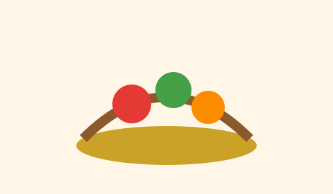

Raízes na Mesa

Distribuição quinzenal de cestas agroecológicas e oficinas de aproveitamento integral
dos alimentos. Em 2026, o projeto atende 320 famílias cadastradas na assistente social
do bairro Bela Vista.
Quando acontece
Quinzenas - terças-feiras, das 14h - 17h, no pátio da sede.
Como ajudar
- Doar grós, óleos e hortaliças não perecíveis
- Apoiar a triagem e a montagem das cestas
Coordenação
Helena Duarte - nutricionista voluntária.
Sala Aberta

Reforço de língua portuguesa, matemática e letramento digital para estudantes do
ensino fundamental. As turmas são pequenas, com no máximo 12 pessoas, para garantir
acompanhamento individual.
Quando acontece
Segundas, quartas e sextas, das 18h - 20h.
Como ajudar
- Ministrar plantés de dúvida
- Doar material escolar e livros didáticos atualizados
Coordenação
Rafael Nunes - pedagogo e mediador de leitura.
Cuidar em Rede

Mutirões de orientação em saúde preventiva, aferição de pressão arterial e encaminhamento
para a unidade básica parceira. Não substituímos o SUS: organizamos a porta de entrada
e o diálogo com as famílias.
Quando acontece
Sábados quinzenais, das 9h - 12h.
Como ajudar
- Atuar na recepção e no preenchimento de fichas
- Doar kits de higiene e termômetros digitais
Coordenação
Dra. Lícia Bernardes - enfermeira comunitária.